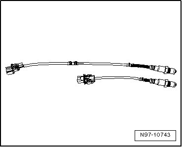
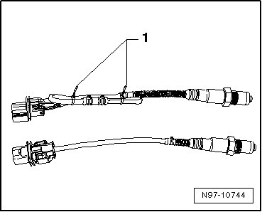

4-Pin Oxygen Sensor
4-Pin Oxygen Sensor
• Use the faulty sensor as a guide for installing all of the accompanying attachments, cable ties or marking bands.
• Do not repair the oxygen sensor wires. Repairing may result in malfunctions.
- Remove the faulty oxygen sensor.
- Lay both of the oxygen sensor next to each other so the sensor housings are the same level.

- Tie the excess length of the sensor (approximately 50 to 250 mm) back so it is the same length as the faulty sensor and secure it with cable ties - 1 -.

- Check if the oxygen sensor connector housing is compatible with the vehicle electrical system side.
- If necessary, replace the vehicle electrical system connector with the provided oxygen sensor connector housing.
• Only replace the connector housing on older vehicles. The connector housing is correct on new vehicles.
• Check the pin assignment. The individual pins in the new connector housing are marked with colors.
• The packaging for the new oxygen sensor contains additional information.
- Install the new oxygen sensor in the vehicle.